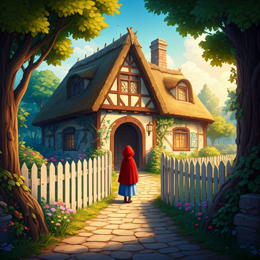
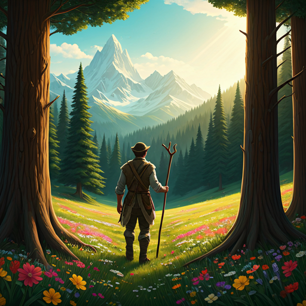

1. La partida hacia la casa de la abuela
Había una vez una dulce niña a la que todos querían, pero su abuela era quien más la amaba. Le regaló una caperuza de terciopelo rojo que le sentaba tan bien que nunca quería ponerse otra cosa, por lo que todos empezaron a llamarla Caperucita Roja. Un día, su madre le pidió que llevara una cesta con pasteles y vino a su abuelita, que vivía en el bosque y se sentía enferma.
—No te apartes del camino —le advirtió su madre—, para que no te caigas y se rompa el frasco de vino. Caperucita prometió obedecer y se adentró en la espesura del bosque con paso ligero.

2. El encuentro con el lobo
Apenas entró en el bosque, Caperucita se encontró con el lobo. Ella no sabía qué animal tan malvado era y no tuvo miedo. El lobo, con voz melosa, le preguntó a dónde iba. La niña, inocente, le explicó el camino hacia la casa de su abuela, situada bajo los tres grandes robles.
El lobo pensó: "Qué bocado tan tierno, será más sabrosa que la vieja". Con astucia, sugirió a Caperucita que recogiera algunas flores silvestres para su abuela. Mientras la niña se entretenía entre margaritas y campanillas, el lobo corrió directamente hacia la cabaña.
3. El engaño en la cabaña
El lobo llegó a la casa, devoró a la abuela y se puso su ropa y su cofia. Cuando Caperucita llegó, encontró la puerta abierta y sintió un extraño escalofrío. Al acercarse a la cama, vio a su abuela con un aspecto muy raro.
"—¡Abuelita, qué orejas tan grandes tienes! —Son para oírte mejor, hija mía. —¡Abuelita, qué ojos tan grandes tienes! —Son para verte mejor, tesoro. —¡Abuelita, qué boca tan grande tienes! —¡Es para comerte mejor!"
Y diciendo esto, el lobo saltó de la cama y se tragó también a la pobre Caperucita Roja de un solo bocado.
4. El valiente cazador y el final feliz
Un cazador que pasaba por allí escuchó los fuertes ronquidos del lobo y entró a investigar. Al verlo durmiendo plácidamente con la panza hinchada, comprendió lo que había sucedido. Con unas tijeras, abrió el vientre del animal y, para su asombro, Caperucita y su abuela salieron sanas y salvas.
Llenaron el vientre del lobo con piedras pesadas y, cuando este despertó e intentó escapar, cayó muerto por el peso. Los tres celebraron con alegría, comiendo los pasteles que Caperucita había traído. La niña prometió que nunca más volvería a apartarse del camino cuando su madre se lo prohibiera.
